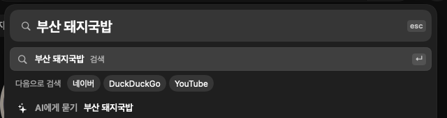
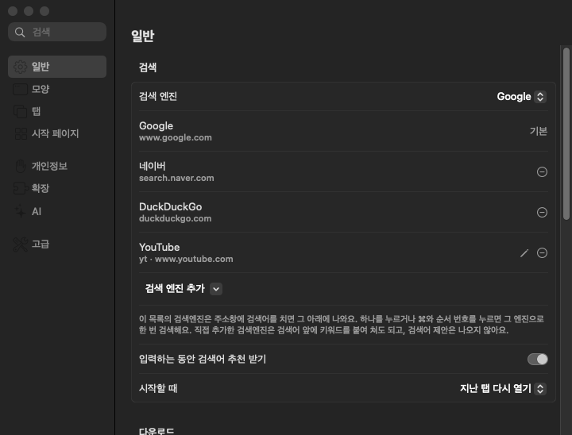

주소창: 검색어 아래에 목록의 다른 검색엔진이 이름만으로 나와요. 누르거나 ⌘1·⌘2·⌘3(주소창이 열려 있을 때만)으로 그 엔진에서 한 번 검색해요.

설정 › 일반 › 검색: 검색엔진 한 목록. 그림은 Bing을 빼고 유튜브를 넣은 상태예요.
- 빼기(−)로 어떤 엔진이든 빼요. 기본 엔진만 못 빼요.
- "검색 엔진 추가 ▾"에서 뺐던 엔진, 자주 쓰는 엔진(다음·유튜브·나무위키·위키백과·쿠팡·네이버 지도·GitHub·Perplexity), "직접 입력…"을 골라요.
- 한 글자 키워드는 없앴어요. 직접 추가한 엔진만 원래처럼 키워드(yt 등)가 있어요.
